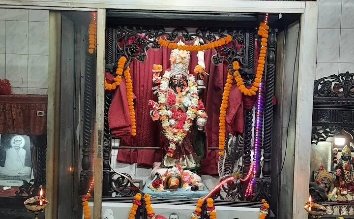
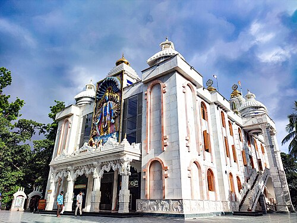

শারদীয় দুর্গোৎসব ২০২৬ · চট্টগ্রাম
চট্টগ্রামের পুজো
এক নতুন অন্বেষণ
Heartfelt endeavor to rediscover and present the history, heritage, pandals, memories, and emotions of Chattogram’s soil and people
Heartfelt endeavor to rediscover and present the history, heritage, pandals, memories, and emotions of Chattogram’s soil and people
উৎসবের প্রতীক্ষা শুরু হয় অনেক আগেই। দিন গোনার সেই আনন্দ, প্রস্তুতির ব্যস্ততা আর উৎসবের আগমনের অপেক্ষা — প্রতিটি মুহূর্তকে আরও বিশেষ করে তুলতেই এখানে থাকছে বিভিন্ন পুজোর গুরুত্বপূর্ণ দিনগুলোর গণনা।
তিথি, নক্ষত্র, শুভক্ষণ ও পুজোর প্রয়োজনীয় দিনক্ষণ — পঞ্জিকা আমাদের উৎসবের সময়কে সঠিকভাবে জানতে সাহায্য করে।
প্রতিষ্ঠা → পরিবর্তন → ঐতিহ্যের বিস্তার → বর্তমান — প্রতিটি মন্দিরের নিজস্ব যাত্রা।

চট্টগ্রামের সীতাকুণ্ডের চন্দ্রনাথ পাহাড়ের চূড়ায় অবস্থিত চন্দ্রনাথ মন্দির বাংলাদেশের অন্যতম প্রাচীন ও গুরুত্বপূর্ণ হিন্দু তীর্থস্থান। সমুদ্রপৃষ্ঠ থেকে প্রায় ১,০২০ ফুট উচ্চতায় পাহাড়ের শীর্ষে অবস্থিত এই মন্দির শিবের উপাসনাকে কেন্দ্র করে গড়ে উঠেছে এবং সনাতন ধর্মাবলম্বীদের কাছে বিশেষ পবিত্র স্থান হিসেবে পরিচিত।
পুরাণ ও লোকবিশ্বাস অনুযায়ী, চন্দ্রনাথ পাহাড় সতীপীঠের একটি স্থান এবং এখানে দেবী সতীর দক্ষিণ বাহু পতিত হয়েছিল বলে বিশ্বাস করা হয়। মন্দিরে প্রতিবছর শিবরাত্রি উপলক্ষে দেশ-বিদেশের অসংখ্য তীর্থযাত্রীর সমাগম ঘটে।
শতাব্দীজুড়ে এই স্থান সনাতন ধর্মীয় ঐতিহ্য ও স্থানীয় সংস্কৃতির সঙ্গে গভীরভাবে যুক্ত।
পাহাড়ি পথ ও দীর্ঘ সিঁড়ি বেয়ে মন্দিরে পৌঁছানোর পথে সবুজ প্রকৃতি ও বঙ্গোপসাগরের বিস্তৃত দৃশ্য দর্শনার্থীদের আকর্ষণ করে। ধর্মীয় গুরুত্বের পাশাপাশি প্রাকৃতিক সৌন্দর্যের জন্যও চন্দ্রনাথ মন্দির ও পাহাড় চট্টগ্রামের অন্যতম পরিচিত তীর্থ ও দর্শনীয় স্থান।

চট্টগ্রামের বোয়ালখালী উপজেলার করলডেঙ্গা পাহাড়ে অবস্থিত মেধস মুনির আশ্রম বাঙালি হিন্দুদের অন্যতম গুরুত্বপূর্ণ ও প্রাচীন তীর্থস্থান। পুরাণকথা অনুযায়ী, ঋষি মেধসের এই আশ্রমেই রাজা সুরথ ও বৈশ্য সমাধি দেবী মহাত্ম্যের পাঠ গ্রহণ করেন এবং প্রথম দুর্গাপূজার সূচনা করেন বলে বিশ্বাস করা হয়।
১৯৭১ সালের মুক্তিযুদ্ধের সময় আশ্রম ও সংলগ্ন মন্দিরগুলো ক্ষতিগ্রস্ত হলেও পরবর্তীতে স্থানীয় ভক্তদের সহযোগিতায় তা পুনর্নির্মাণ করা হয়। বর্তমানে প্রায় ৬৮ একর জায়গাজুড়ে গড়ে ওঠা এই তীর্থক্ষেত্রে চণ্ডী, শিব, সীতা, তারা ও কালীসহ একাধিক মন্দির রয়েছে। আশ্রমের পাহাড়ি পরিবেশ, সীতার পুকুর ও ঝরনা এর ধর্মীয় ও প্রাকৃতিক সৌন্দর্য আরও বাড়িয়েছে।
প্রতিবছর মহালয়া থেকে দুর্গাপূজা উপলক্ষে এখানে বিপুলসংখ্যক ভক্ত ও দর্শনার্থীর সমাগম হয়। দুর্গাপূজার সঙ্গে গভীরভাবে যুক্ত এই আশ্রম চট্টগ্রামের ধর্মীয় ঐতিহ্য ও বাঙালি হিন্দু সংস্কৃতির একটি গুরুত্বপূর্ণ অংশ।

চট্টগ্রামের মেহেদীবাগের চটেশ্বরী সড়কে অবস্থিত শ্রীশ্রী চটেশ্বরী কালী মন্দির চট্টগ্রামের অন্যতম প্রাচীন ও ঐতিহ্যবাহী হিন্দু মন্দির। জনশ্রুতি অনুযায়ী, প্রায় ৩০০–৩৫০ বছর আগে সাধক ও সন্ন্যাসীদের সাধনার মধ্য দিয়ে চটেশ্বরী দেবীর মাহাত্ম্য প্রতিষ্ঠিত হয়। মন্দিরটি দেবী কালী ও শিবের উপাসনার একটি গুরুত্বপূর্ণ কেন্দ্র হিসেবে পরিচিত।
১৯৭১ সালের মুক্তিযুদ্ধের সময় মন্দিরটি ব্যাপকভাবে ক্ষতিগ্রস্ত হয় এবং প্রাচীন নিমকাঠের দেবীমূর্তিও ধ্বংস করা হয়। স্বাধীনতার পর সেবায়েত, ভক্ত ও বিভিন্ন মহলের সহযোগিতায় মন্দিরটি পুনর্নির্মাণ করা হয়। বর্তমানে এখানে কষ্টিপাথরের চটেশ্বরী কালীমূর্তি ও শ্বেতপাথরের শিবমূর্তি পূজিত হচ্ছে।
প্রতিদিন নিয়মিত পূজা-অর্চনা অনুষ্ঠিত হয় এবং শ্যামাপূজা মন্দিরটির প্রধান উৎসব। চট্টগ্রামের ধর্মীয় ও সাংস্কৃতিক ঐতিহ্যের গুরুত্বপূর্ণ অংশ হিসেবে মন্দিরটি স্থানীয় ভক্তদের পাশাপাশি দেশ-বিদেশের দর্শনার্থীদেরও আকর্ষণ করে।

চট্টগ্রামের গোলপাহাড় এলাকায়, জিইসি মোড়ের নিকটবর্তী স্থানে অবস্থিত গোলপাহাড় মহাশ্মশান কালী মন্দির নগরীর অন্যতম পরিচিত কালীমন্দির ও ধর্মীয় স্থাপনা। মন্দির প্রাঙ্গণে মা কালী, শিব এবং রাধা-কৃষ্ণের উপাসনাস্থল রয়েছে। দীর্ঘদিন ধরে স্থানীয় সনাতন ধর্মাবলম্বীদের নিয়মিত পূজা-অর্চনা ও ধর্মীয় আচার পালনের একটি গুরুত্বপূর্ণ কেন্দ্র হিসেবে মন্দিরটি পরিচিত।
মন্দিরে বিভিন্ন তিথি ও ধর্মীয় উৎসব উপলক্ষে বিশেষ পূজা ও অনুষ্ঠান আয়োজন করা হয়। এর মধ্যে শ্যামাপূজা ও কালীপূজা বিশেষভাবে উল্লেখযোগ্য। এসব আয়োজনে ভক্তদের পাশাপাশি বিভিন্ন স্থান থেকে আগত দর্শনার্থীদেরও সমাগম ঘটে। গোলপাহাড় এলাকার ধর্মীয় ও সাংস্কৃতিক পরিবেশের সঙ্গে মন্দিরটির একটি দীর্ঘস্থায়ী সম্পর্ক রয়েছে।
মহাশ্মশানকে কেন্দ্র করে গড়ে ওঠা এই মন্দির শুধু উপাসনার স্থান নয়; চট্টগ্রামের নগরজীবনে সনাতন ধর্মীয় ঐতিহ্য, স্মৃতি ও সংস্কৃতিরও একটি গুরুত্বপূর্ণ অংশ।
চট্টগ্রাম বিশ্ববিদ্যালয়ের ২ নম্বর গেট সংলগ্ন এলাকায় অবস্থিত সরস্বতী জ্ঞান মন্দির বিশ্ববিদ্যালয়ের অন্যতম গুরুত্বপূর্ণ ধর্মীয় ও সাংস্কৃতিক স্থাপনা। ২০১১ সালে মন্দির নির্মাণের জন্য জায়গা বরাদ্দ দেওয়া হয় এবং ২০১৯ সালের ৪ ফেব্রুয়ারি প্রায় ২০ হাজার বর্গফুট জায়গায় এর নির্মাণকাজের ভিত্তিপ্রস্তর স্থাপন করা হয়।
দীর্ঘ নির্মাণপ্রক্রিয়া শেষে ২০২৬ সালের ২০ এপ্রিল অক্ষয় তৃতীয়া তিথিতে মন্দিরটির আনুষ্ঠানিক উদ্বোধন ও দেবী সরস্বতীর বিগ্রহ প্রতিষ্ঠা করা হয়। মন্দিরটির মূল স্থাপনা নির্মাণে অদুল-অনিতা ফাউন্ডেশন অর্থায়ন করে। এটি বাংলাদেশে প্রথম ও একমাত্র ‘সরস্বতী জ্ঞান মন্দির’ হিসেবে পরিচিত।
চট্টগ্রাম বিশ্ববিদ্যালয় প্রতিষ্ঠার পর থেকেই এখানে নিয়মিত সরস্বতী পূজা উদযাপিত হয়ে আসছে। বর্তমানে সরস্বতী পূজাসহ বিভিন্ন ধর্মীয় ও সাংস্কৃতিক আয়োজনের মাধ্যমে মন্দিরটি বিশ্ববিদ্যালয়ের শিক্ষক, শিক্ষার্থী ও ভক্তদের জন্য একটি গুরুত্বপূর্ণ মিলনস্থল হিসেবে ভূমিকা রাখছে।

চট্টগ্রামের পাঁচলাইশের প্রবর্তক পাহাড়ে অবস্থিত ইসকন প্রবর্তক শ্রীকৃষ্ণ মন্দির বাংলাদেশের অন্যতম বৃহৎ ও নান্দনিক বৈষ্ণব মন্দির। আন্তর্জাতিক কৃষ্ণভাবনামৃত সংঘ (ISKCON) পরিচালিত এই মন্দিরে শ্রীশ্রী রাধা-কুঞ্জবিহারী, জগন্নাথ-বলদেব-সুভদ্রা ও গৌর-নিতাই বিগ্রহ পূজিত হন।
২০০৭ সালে মন্দিরটির ভিত্তিপ্রস্তর স্থাপন করা হয় এবং দীর্ঘ নির্মাণকাজের পর ২০২১ সালে উদ্বোধন করা হয়। রাজস্থানের মাকরানা মার্বেল, মিয়ানমার ও আফ্রিকা থেকে সংগৃহীত কাঠ এবং সূক্ষ্ম বৈদিক অলংকরণে নির্মিত মন্দিরটির স্থাপত্যে শঙ্খ, চক্র, গদা, পদ্ম ও বিভিন্ন পৌরাণিক অনুষঙ্গের ব্যবহার দেখা যায়।
মন্দিরটি নিয়মিত হরেকৃষ্ণ মহামন্ত্র প্রচার, ভাগবত পাঠ, আরতি, প্রসাদ বিতরণ ও ধর্মীয় উৎসব আয়োজন করে। জন্মাষ্টমী, রাধাষ্টমী, রথযাত্রা ও দোলপূর্ণিমাসহ বিভিন্ন বৈষ্ণব উৎসবে এখানে বিশেষ আয়োজন করা হয়। চট্টগ্রামের ধর্মীয় ও সাংস্কৃতিক ঐতিহ্যের একটি গুরুত্বপূর্ণ অংশ হিসেবে মন্দিরটি দেশ-বিদেশের দর্শনার্থীদের আকর্ষণ করে।
একটি ছবি কখনো শুধু একটি ছবি নয় — তার মধ্যে লুকিয়ে থাকে একটি মুহূর্ত, একটি অনুভূতি কিংবা একটি গল্প। ঢাকের আওয়াজ, ধূপের গন্ধ, মণ্ডপের আলো, ভিড়ের মধ্যে হারিয়ে যাওয়া একটুকরো হাসি — এই সবকিছুকে ফ্রেমবন্দি করে রাখার নামই Pujography। আপনার তোলা এমন একটি মুহূর্ত আমাদের সাথে ভাগ করে নিন, হয়ে উঠুন এই ডিজিটাল আর্কাইভের অংশ — লাইক আর কমেন্ট করে অন্যদের মুহূর্তগুলোকেও ভালোবাসা জানান।
বিজয়ী হতে আজই অংশগ্রহন করুন
প্রতিটি ছবি একটি করে গল্প — আর প্রতিটি গল্প বেঁচে থাকুক পরের পুজোর অপেক্ষায়। আমাদের সাথে এই যাত্রায় থাকার জন্য ধন্যবাদ।
— চট্টলার পুজো টিমFind mandaps, temples and cultural programs closest to you.
The Devi Mahatmya, part of the Markandeya Purana, is the foundational scripture behind Durga Puja — the story of the Goddess's battle against Mahishasura. Full retelling to be sourced from a verified translation.
Regional Shiva stories connected to Chattogram's temple traditions, often recounted during related festival observances. Placeholder — to be replaced with verified regional narratives.
Stories of Kali's fierce compassion, told across Bengal's Shakta tradition and closely tied to the region's Kali Puja observances.
পূজা শুরুর সংকল্প মন্ত্র — পূজারীর নিয়ত ও উদ্দেশ্য ঘোষণার আনুষ্ঠানিক অংশ।
ফুল অর্পণের সময় পাঠ করা মন্ত্র, ভক্তের শ্রদ্ধা নিবেদনের প্রতীক।
মহালয়ার ভোর মানেই এক অন্যরকম আবহ। চণ্ডীপাঠের মন্ত্র, সেই চিরচেনা কণ্ঠ, ভোরের নিস্তব্ধতা আর বাঙালির দীর্ঘদিনের স্মৃতি — 'Echoes of Chandi' সেই ঐতিহ্য, নস্টালজিয়া ও আধ্যাত্মিক অনুভূতির এক বিশেষ সংরক্ষণ।